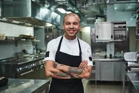

Habilidades Creatividad, organización, limpieza, resistencia física, capacidad para trabajar en equipo, orientación al detalle y capacidad para trabajar bajo presión
Conocimientos Técnicas culinarias, características de los alimentos, producción, variedades, conservación y vida útil, nutrición y legislación alimentaria
Experiencias Creación de recetas y menús, elaboración de postres, técnicas de panadería, manejo de chocolate, gastronomía molecular, manejo y afilación de cuchillos, emplatado, preparación de platos según recetas, uso responsable de materias primas, manipulación higiénica de los alimentos, mantenimiento de la limpieza del espacio de trabajo, facilidad para improvisar menús y cartas de temporada, experiencia en carnes y pescados a la parrilla, preparación de platos celíacos y veganos, capacitación para alta cocina de vanguardia, especialidad en postres artesanos, perfeccionismo y detallismo en las presentaciones